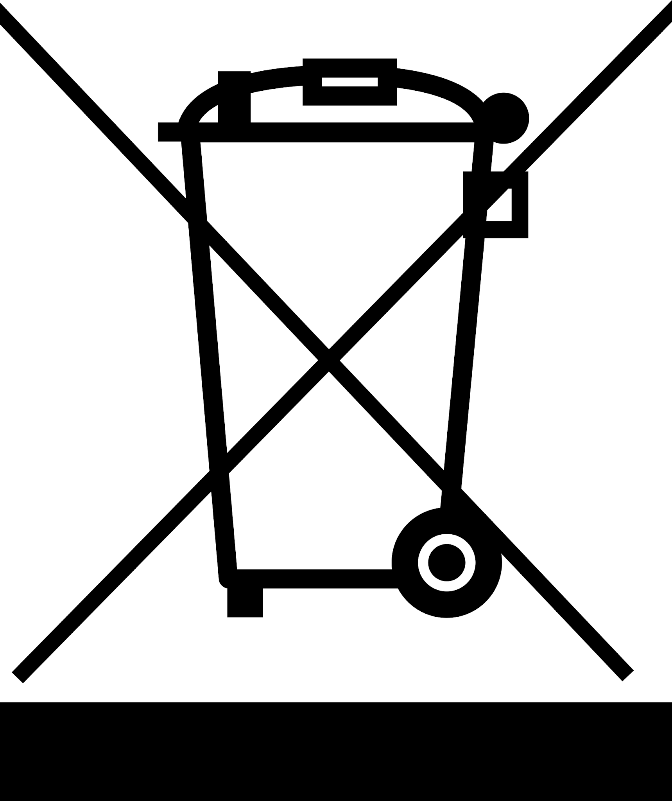

Информация за безопасност
Прочетете внимателно тези инструкции преди да използвате уреда.
Внимание!
Когато използвате съдомиялната машина следвайте инструкциите описани по-долу:
• Уредът е предназначен за домашна употреба, както и:
- в кухненски зони в магазини, офиси и други работни места;
- във ферми;
- от клиенти в хотели, мотели и друг вид жилищно настаняване; - хотели, които предлагат нощувка със закуска;
• Уредът е подходящ за използване от деца над 8-годишна възраст или от лица с психически и умствени отклонения
ако те са запознати с инструкциите за употреба и могат да осъзнаят опасните последици от неправилната работа със съдомиялната.
На децата трябва да бъде обяснено, че не трябва да си играят с уреда.
Почистването и поддръжката на уреда от деца трябва да се осъществява под постоянно наблюдение от възрастен човек.
• Уредът не е подходящ за използване от лица (включително деца) с психически и умствени отклонения.
Също така не е препоръчително използването от хора без опит или незапознати с инструкциите за употреба,
тъй като това застрашава тяхната безопасност.
• Този уред е предназначен единствено за употреба в домашни условия. • За да избегнете риск от токов удар,
не потапяйте и не разливайте върху уреда, захранващия кабел или контакта вода или друга течност.
• Преди почистването и поддръжката, изключете уреда от електрическата мрежа.
• При почистването на уреда използвайте топла сапунена вода и мека кърпа. След това подсушете внимателно.
Инструкции за заземяване
• Уредът трябва да бъде заземен. В случай на неизправност или късо съединение, заземяването намалява риска от токов удар. Уредът е снабден с кабел и заземен щепсел.
• Контактът трябва също да е правилно инсталиран и заземен. • Неправилното заземяване може до доведе до токов удар.
• Консултирайте се със специалист ако имате съмнение относно правилното заземяване на уреда. Ако щепсела на уреда не съответства на контакта,
в никакъв случай не се опитвайте да модифицирате контакта. Свържете се с квалифицирано лице за да разрешите проблема.
• Не се облягайте или сядайте върху вратата на уреда или кошниците. • Не включвайте съдомиялната докато не са поставени
всички необходими панели.
• Отваряйте вратата изключително внимателно ако съдомиялната е в процес на работа. Опасност от изплискване на вода!
• Не поставяйте тежки предмети и не се облягайте на вратата, когато е отворена. Уредът може да се наклони напред.
• Когато зареждате съдомиялната машина:
1) Поставете правилно острите предмети за да не повредят уплътнението на вратата.
2) Внимание: Ножове и други предмети с остри краища трябва да бъдат поставени в кошницата с остриетата надолу или хоризонтално.
• Проверете дали отделението за почистващ препарат е празно след края на програмата.
• Не поставяйте пластмасови съдове в уреда освен ако не са маркирани със знак, че са подходящи за употреба в съдомиялна машина.
За съдове, които не са маркирани с такъв знак се консултирайте с изискванията на
производителя.
